00
용어 5개
스킬 · 플러그인 · MCP · 훅 · 컨텍스트 다섯 개. 이것만 알면 문서가 읽히고 도구 고르는 기준도 보입니다.
| 용어 | 뜻 | 팁 |
|---|---|---|
| 스킬 | Claude에게 일하는 방법을 적어 둔 지침. 필요할 때 자동으로 읽힘 | 평소엔 짧은 설명만 읽어 가벼움 |
| 플러그인 | 스킬 · 명령 · 훅 · MCP를 한 번에 설치하는 패키지 | /plugin install 이름@마켓 (마켓 = 플러그인 배포 목록) |
MCPModel Context Protocol | Claude를 외부 서비스(Figma · Notion · 브라우저 등)와 연결하는 서버 | 켜 두는 것만으로 토큰을 차지. 꼭 필요한 것만 |
| 훅(Hooks) | 특정 시점에 자동 실행되는 스크립트(작은 프로그램) | 말로 한 지시와 달리 매번 확실히 실행됨 |
| 컨텍스트 · 토큰 | 컨텍스트 = Claude가 한 번에 기억하는 양, 토큰 = 그 단위(= 비용) | 도구를 많이 켤수록 대화에 쓸 공간이 줄고 비용이 늘어남 |
01
시작하기 A–Z
유료 플랜(Pro 이상) 필요. 명령은 오른쪽 복사 버튼으로, 막히면 단계 아래 안 될 때를 펼치세요.PS C:\…>는 PowerShell 창, >는 Claude에게 치는 말, ⏺는 Claude의 답.
터미널이 낯설다면 데스크톱 앱 설치 → 로그인 → '폴더 열기'로 바로 시작. A–E는 익숙해진 뒤에.
A
PowerShell 열기
Win 키 → powershell 입력 → Windows PowerShell. 창 맨 앞이 PS로 시작하면 맞습니다. (x86) 항목은 고르지 마세요.
B
설치 · 확인
① 설치 명령을 붙여넣고(Ctrl+V) Enter. PS 줄이 다시 보이면 끝.
irm https://claude.ai/install.ps1 | iex② 창을 닫고 새로 열어 확인. 2.1.263 (Claude Code)처럼 버전이 나오면 성공.
claude --version안 될 때
| 오류 문구 | 해결 |
|---|---|
| 'claude' 용어가 … 인식되지 않습니다 (is not recognized) | 창을 모두 닫고 새로 열기. 그래도 같으면 아래를 실행(아무것도 안 나오면 정상)하고 새 창에서 다시.
[Environment]::SetEnvironmentVariable('PATH', [Environment]::GetEnvironmentVariable('PATH', 'User') + ";$env:USERPROFILE\.local\bin", 'User') |
| 'irm'은(는) … 명령이 아닙니다 · '&&' 토큰 · 'fsSL' 매개 변수 (not recognized · not a valid statement separator · parameter name 'fsSL') | 다른 창(CMD)이거나 다른 OS용 명령입니다. PowerShell 창에서 위 설치 명령을 복사 버튼으로 다시. |
| SSL/TLS 보안 채널 · 기본 연결이 닫혔습니다 (SSL/TLS secure channel · connection was closed) | 보안 연결 설정을 켜고 다시 설치. 회사망이면 IT 담당자에게 downloads.claude.ai 허용 요청.
[Net.ServicePointManager]::SecurityProtocol = 'Tls12'; irm https://claude.ai/install.ps1 | iex |
| 회사망에서 원격 서버에 연결할 수 없습니다 (Unable to connect to the remote server) | 회사 프록시를 거쳐야 하는 경우. IT 담당자에게 프록시 주소를 받아 첫 줄에 넣고 실행. 이후 Claude 실행에도 계속 적용됩니다.
$p = 'http://프록시주소:포트'
[Environment]::SetEnvironmentVariable('HTTPS_PROXY', $p, 'User')
$env:HTTP_PROXY = $p; $env:HTTPS_PROXY = $p
irm https://claude.ai/install.ps1 | iex |
| <html 같은 글자가 섞인 오류 · 403 | 잠시 뒤 다시. 계속되면 winget으로 설치(자동 업데이트 없음).
winget install Anthropic.ClaudeCode |
그 밖의 오류는 공식 문제 해결에서 문구로 찾기.
C
첫 실행 · 로그인
① Claude에게 맡길 파일이 있는 폴더(없으면 새 폴더)를 탐색기로 열고, 주소창에 powershell → Enter. 열린 창에서 실행.
claude그림으로 보기15초

powershell → Enter → 그 폴더에서 열린 창에 claude → Enter.② 처음 한 번은 화면 안내를 따릅니다: 테마 고르기 → 로그인 방식은 구독 계정(Claude account) 항목 → 브라우저에서 로그인 · 승인 → 창으로 돌아와 Enter → 이 폴더를 신뢰하는지 물으면 Yes.
③ > 입력창이 보이면 성공. 첫 명령으로 Claude가 매번 읽는 메모(CLAUDE.md)를 만드세요. 끝낼 때는 /exit. Pro · Max · Team은 묻지 않고 실행하는 auto 모드로 시작하니, 하나씩 확인받으려면 Shift+Tab으로 Manual(3장).
/initPS C:\work\my-project> claude Opening browser to log in... (처음 한 번만) > 이 폴더에 뭐가 있는지 설명해줘 ⏺ React 관리자 화면 프로젝트입니다. 화면은 src/pages, 기획 문서는 docs/ ... > /init ⏺ Write(CLAUDE.md) ⏺ CLAUDE.md를 만들었어요. 빌드 명령 · 폴더 구조 · 코딩 규칙을 적어 두었습니다.
안 될 때
| 증상 · 오류 문구 | 해결 |
|---|---|
| 브라우저가 안 열림 | 창에서 c를 눌러 주소를 복사해 브라우저에 붙여넣기. |
| 브라우저에 코드가 보임 · Paste code here | 코드를 복사해 창에 붙여넣고 Enter. Ctrl+V가 안 되면 마우스 오른쪽 클릭. |
| 403 Forbidden · 사용 권한 없음 | 무료 플랜이거나 구독이 끝났습니다. claude.ai/settings에서 확인. |
| This organization has been disabled | 예전에 넣은 API 키가 구독 대신 쓰이는 중. 아래로 지우고 새 창에서 다시.
[Environment]::SetEnvironmentVariable('ANTHROPIC_API_KEY', $null, 'User') |
D
Node.js · Python 설치
E의 스킬 · MCP 설치(npx)와 문서 스킬용. Claude를 끝낸(/exit) PowerShell 창에서 실행하고, 설치 허용 창이 뜨면 예. 끝나면 창을 새로 열어 node -v로 확인. Claude 자체에는 필요 없으니 막히면 건너뛰어도 됩니다.
winget install OpenJS.NodeJS.LTS --accept-source-agreements --accept-package-agreements
winget install Python.Python.3.12 --accept-source-agreements --accept-package-agreements안 될 때
| 증상 · 오류 문구 | 해결 |
|---|---|
| 'node' · 'npx' 용어가 … 인식되지 않습니다 | 창을 모두 닫고 새로 열기. |
| 스크립트를 실행할 수 없으므로 … npx.ps1 (running scripts is disabled) | 내 계정에서 스크립트 실행을 허용(묻으면 Y). 회사 정책으로 막히면 npx 대신 npx.cmd.
Set-ExecutionPolicy RemoteSigned -Scope CurrentUser |
| 'winget' 용어가 … 인식되지 않습니다 · 관리자 권한 요구 | 사이트에서 설치 파일로(권한이 막히면 IT 담당자에게 요청): Node.js · Python(첫 화면에서 Add python.exe to PATH 체크). |
E
플러그인 · MCP · 스킬 붙이기
① 플러그인은 Claude 대화창에서. 설치 후 다시 시작하라고 하면 /exit → claude.
/plugin install skill-creator@claude-plugins-official/plugin install mattpocock-skills@claude-plugins-official② 스킬 · MCP는 PowerShell에서. Ok to proceed?에는 y, 설치 위치 등을 물으면 그대로 Enter. 아래는 필요한 스킬을 말로 찾아 주는 find-skills이고, 다른 도구는 4–5장 표의 '설치' 칸에 있습니다.
npx skills add vercel-labs/skills --skill find-skills세팅 추천.
/plugin install claude-code-setup@claude-plugins-official 후 "이 프로젝트에 맞는 자동화 추천해줘". 프로젝트에 맞는 훅 · 스킬 · MCP를 골라 줍니다.자주 쓰는 명령 한눈에
| 명령 | 무엇 |
|---|---|
claude "작업" · claude -p "질문" | 첫 지시와 함께 시작 · 한 번 답하고 종료 |
claude -c · claude -r | 직전 세션(대화 한 판) 이어가기 · 이전 세션 고르기 |
/help · /model · /exit | 명령 목록 · 모델 변경 · 종료 |
/plugin · /mcp · /permissions | 플러그인 탐색 · MCP 상태 · 권한 설정 |
/usage · /rewind · /resume | 사용량 확인 · 체크포인트(자동 저장 지점)로 되감기(Esc 두 번과 같음) · 이전 세션 이어가기 |
/security-review | 변경한 코드의 보안 점검. 설치 없이 바로 |
/statusline | 입력창 아래 상태 표시줄 설정. 모델 · 컨텍스트 · 플랜 사용량을 상시 표시(아래 예). 한 번 설정하면 이후 자동. 더 풍부하게는 claude-hud |
상태 표시줄 예.
Fable 5.1 · effort high · ctx 185k/1M 18% · 5h 24% · 7d 41% · my-projectctx는 이 세션이 쓴 컨텍스트(기억 용량), 5h · 7d는 5시간 · 7일 플랜 사용량(Pro · Max). 80%를 넘으면 초기화 시각이 붙습니다.02
터미널 쉽게 쓰기
제목을 누르면 펼쳐집니다. Windows 기준, 맥은 마지막. 필수 표시만 익혀도 충분합니다.
A. Windows Terminal18개새 탭 Ctrl+Shift+T · 화면 나누기 Alt+Shift+D · 복사 · 붙여넣기
| 하는 일 | 키 | 메모 |
|---|---|---|
| 새 탭필수 | Ctrl+Shift+T | 프로젝트 폴더마다 탭 하나 |
| 탭 전환 | Ctrl+Tab | |
| 탭 닫기 | Ctrl+Shift+W | 나눈 창에서는 포커스된 창만 닫힘 |
| 화면 나누기필수 | Alt+Shift+D | 지금 창을 복제해 넓은 쪽으로 나눔 |
| 나눈 창 이동 | Alt+←→↑↓ | |
| 나눈 창 크기 조절 | Alt+Shift+←→↑↓ | |
| 검색 | Ctrl+Shift+F | |
| 화면 맨 위로 | Ctrl+Shift+Home | 지난 출력 처음까지 |
| 화면 맨 아래로 | Ctrl+Shift+End | 입력줄로 복귀 |
| 한 화면 위로 | Ctrl+Shift+PgUp | |
| 한 화면 아래로 | Ctrl+Shift+PgDn | |
| 글자 키우기 | Ctrl+= | |
| 글자 줄이기 | Ctrl+- | |
| 복사필수 | 드래그 후 Ctrl+C | |
| 붙여넣기필수 | Ctrl+V | |
| 명령 팔레트 | Ctrl+Shift+P | 모든 동작 검색 |
| 퀵 창 | Win+` | 화면 위에서 내려오는 터미널 |
| 키 바꾸기 | Ctrl+, | 설정 → 동작에서 변경 |
추천 배치. 화면을 나눠(Alt+Shift+D) 왼쪽은 작업, 오른쪽은 질문용
claude. 프로젝트가 여럿이면 탭.PS C:\work\my-project> claude > 가입 화면에 카카오 로그인 추가해줘 ⏺ Update(src/LoginForm.tsx) ⏺ Update(src/auth.ts) ⏺ Write(src/kakao.ts)
PS C:\work\design-system> claude > Figma MCP는 어떻게 연결해? ⏺ /plugin install figma@claude-plugins-official 한 줄이면 됩니다.
B. PowerShell 창20개폴더에서 바로 열기 · Tab 자동 완성 · Esc 지우기 · Ctrl+R 검색 · 자주 쓰는 명령 5
| 하는 일 | 키 | 메모 |
|---|---|---|
| 자동 완성 | Tab | 여러 번 누르면 후보 순환 |
| 완성 목록 보기 | Ctrl+Space | 후보를 메뉴로 보고 고르기 |
| 이전 명령 검색 | Ctrl+R | 일부만 쳐도 찾아 줌 |
| 앞글자 맞는 이전 명령 | F8 | cd까지 치고 누르면 cd로 시작한 명령만 |
| 입력 줄 지우기 | Esc | |
| 줄 처음으로 | Home | |
| 줄 끝으로 | End | |
| 단어 왼쪽으로 | Ctrl+← | |
| 단어 오른쪽으로 | Ctrl+→ | |
| 단어 하나 지우기 | Ctrl+Backspace | |
| 화면 지우기 | Ctrl+L | cls와 같음 |
| 되돌리기 | Ctrl+Z | 입력 편집 취소 |
| 여러 줄 명령 | Shift+Enter | PowerShell 창에서 줄바꿈. Claude 안에서는 Ctrl+J가 어느 터미널에서나 됨 |
| 경로 넣기 | 탐색기에서 폴더를 창으로 드래그 | 경로가 그대로 붙음 |
| 이 폴더에서 터미널 열기 | 탐색기 주소창에 powershell 입력 후 Enter | cd 없이 그 폴더에서 바로 열림. wt를 치면 Windows Terminal. 빈 곳 Shift+우클릭 → "터미널에서 열기"도 같음 |
| 명령 | 무엇 |
|---|---|
cd 폴더 · cd .. | 폴더로 이동 · 상위로 |
ls · pwd | 목록 보기 · 현재 위치 |
code . · explorer . | 현재 폴더를 VS Code · 탐색기로 열기 |
cls | 화면 지우기 |
claude | 여기서 Claude Code 시작 |
C. VS Code4개Ctrl+` 터미널 열기 · Ctrl+Shift+5 나누기
| 하는 일 | 키 | 메모 |
|---|---|---|
| 터미널 열기 · 닫기 | Ctrl+` | 같은 키로 토글 |
| 새 터미널 | Ctrl+Shift+` | |
| 터미널 나누기 | Ctrl+Shift+5 | 나눈 창 이동은 Alt+← Alt+→ |
| Claude Code 패널 | Spark 아이콘 클릭 | 확장 설치 후 오른쪽 패널 |
D. Claude Code 세션17개필수 6개 포함 · Esc · Shift+Tab · Ctrl+J · Alt+V
| 하는 일 | 키 | 메모 |
|---|---|---|
| 단축키 도움말 | ? | 빈 입력창에서 누르면 모든 단축키가 뜸 |
| 답변 멈추기필수 | Esc | |
| 되감기필수 | EscEsc빠르게 두 번 | 이전 지점으로 돌아가 다시 시도 |
| 입력 지우기 · 중단 | Ctrl+C | 입력 중이면 지우기, 실행 중이면 중단. PowerShell 창에서도 같음 |
| 종료 | Ctrl+D | |
| 여러 줄 입력필수 | Ctrl+J | Enter는 전송, 줄바꿈은 Ctrl+J. 안 되면 줄 끝에 \ 치고 Enter |
| 이전 입력 | ↑ | PowerShell 창에서도 같음 |
| 권한 모드 전환필수 | Shift+Tab | Manual → acceptEdits → Plan → auto 순환. 모드 설명은 3장 |
| 이미지 붙이기필수 | Alt+V | 스크린샷 복사 후 바로. 파일 드래그도 됨 |
| 대화 맨 위로 | Ctrl+Home | 전체화면 모드에서. 마우스 휠도 됨 |
| 대화 맨 아래로 | Ctrl+End | 최신 답변으로 복귀 |
| 반 화면 위로 | PgUp | |
| 반 화면 아래로 | PgDn | |
| 모델 전환 | Alt+P | |
| 명령 실행필수 | / | 명령 · 스킬 목록 |
| 셸 명령 그대로 실행 | ! | 예: !git status |
| 파일 언급 | @ | 예: @src/App.tsx |
Shift+Tab → 아래 안내줄이 바뀜 ▸▸ plan mode on (shift+tab to cycle) · ? for shortcuts Ctrl+J → 여러 줄 입력 > 결제 화면 개편 계획 세워줘 - 카드 · 카카오페이 지원 - 기존 주문 데이터 유지 ⏺ 계획만 정리했습니다. 파일은 수정하지 않았어요. 진행할까요? Alt+V → 스크린샷 붙이기 > [Image #1] 이 화면 왜 깨졌어? ⏺ flex-wrap 이 없어 좁은 폭에서 넘칩니다. 고칠까요?
E. 맥3개iTerm2 나누기 Cmd+D · Option을 Meta로
| 하는 일 | 키 | 메모 |
|---|---|---|
| iTerm2 화면 나누기 | Cmd+D | 가로는 Cmd+Shift+D. 새 탭은 Cmd+T |
| Alt 단축키 쓰기 | Option → Meta | 터미널 설정에서 변경. Alt+P 같은 키를 쓰려면 필요 |
| 이미지 붙이기 | Ctrl+V | iTerm2는 Cmd+V |
03
권한 모드와 습관
Claude가 어디까지 스스로 하게 둘지 정하는 권한 모드와, 대화 공간(컨텍스트)을 아끼는 습관. Pro · Max · Team은 auto로 시작합니다. 하나씩 확인받고 싶으면 Shift+Tab으로 Manual, 계획만 받고 싶으면 Plan.
권한 모드 6가지주로
Shift+Tab으로 전환| 모드 | 동작 | 언제 |
|---|---|---|
Manualdefault | 도구별 첫 사용 시 확인 창(↑↓로 고르고 Enter 허용 · Esc 거부) | 하나씩 확인받고 싶을 때. Enterprise와 설치 후 첫 세션은 이 모드로 시작 |
| acceptEdits | 파일 편집 자동 승인 | 평소 작업. 확인 창 줄이기 |
| Plan | 파일 수정 없이 읽기 · 계획 | 시작 전 계획 세울 때 |
| auto | 안전 검사 후 자동 승인 | Pro · Max · Team의 시작 모드. 긴 작업 맡길 때 |
| dontAsk | 허용 목록 외 자동 거부 | 고급. 명령줄 옵션으로만 켬(Shift+Tab엔 없음) |
bypassPermissions claude --dangerously-skip-permissions | 확인 없이 전부 실행 | 고급. 내 PC와 분리된 가상 환경(컨테이너 · VM)에서만. 먼저 hookify(4장)로 위험 명령 차단 |
습관 4개
| 항목 | 무엇 |
|---|---|
/context | 무엇이 토큰을 얼마나 쓰는지 확인. MCP가 크게 차지하면 /mcp에서 끄기 |
/clear · /compact | 작업이 바뀌면 clear(대화 기억 비우기), 대화가 길어지면 compact(요약해 줄이기) |
CLAUDE.md 짧게 /init으로 시작 | 200줄 미만. 매번 읽히므로 길면 토큰 낭비 |
/handoffmattpocock-skills에 포함 | 세션이 길어지면 인수인계 문서 생성. 새 세션에 붙여넣으면 이어짐 |
04
핵심 요약이것만 알아도 됨
누구나 먼저 설치할 6개. 요구사항 검증 · 스킬 찾기 · 안전장치 · CLAUDE.md 관리. 업무별 도구는 5장.
필수 누구나핵심 업무별 기본스킬플러그인MCP도구 · 설정
/이름 직접 호출 · 자동 = 설치만 하면 말로 시킬 때 알아서 쓰임설치: /로 시작하면 Claude 대화창, 그 외는 PowerShell| 항목 | 용도 | 호출 · 사용법 | 설치 |
|---|---|---|---|
| 반복 지시를 스킬로 | /skill-creator지시를 설명하면 파일 생성 | /plugin install skill-creator@claude-plugins-official | |
grill-me필수스킬 | 시작 전 요구사항 검증 | /grill-me하고 싶은 일을 말하면 질문으로 검증 | /plugin install mattpocock-skills@claude-plugins-official |
find-skills필수스킬 | 필요한 스킬 검색 · 설치 | 자동"PDF 다루는 스킬 있어?" | npx skills add vercel-labs/skills --skill find-skills |
| 비밀키·취약 코드 경고 | 자동Python 설치 후. 편집 시 경고 | /plugin install security-guidance@claude-plugins-official | |
| 훅 생성: 위험 명령 차단 · 종료 전 검사 | /hookify"삭제 명령 막아줘"처럼 말하면 훅 생성 | /plugin install hookify@claude-plugins-official | |
| 세션 학습을 CLAUDE.md에 반영 | /revise-claude-md세션 끝에 실행. 점검은 "CLAUDE.md 감사해줘" | /plugin install claude-md-management@claude-plugins-official |
원칙. 적게 설치(MCP 3~6, 스킬 8~12). 명령으로 되면 MCP 대신 스킬 · CLI(터미널 명령 도구).
더 찾아보기. 먼저 find-skills에게 말로 물어보고, 목록을 직접 보고 싶으면 Awesome Claude Skills.
누구나 올린 목록이라 품질이 제각각입니다. 설치 전에 SKILL.md를 읽어 보고, 별이 적거나 오래 방치된 것은 피하세요.
누구나 올린 목록이라 품질이 제각각입니다. 설치 전에 SKILL.md를 읽어 보고, 별이 적거나 오래 방치된 것은 피하세요.
05
업무별 도구
기획 · 디자인 · 퍼블리싱 · 문서(마케팅 포함) 중 내 업무 탭만. 핵심 표시가 먼저 설치할 것. 공통 도구는 4장.
준비물. 문서 스킬(기획 · 문서 탭)은 Python · LibreOffice · Poppler가 있어야 파일이 만들어집니다. Python은 1장 D에서, LibreOffice · Poppler는 문서 스킬 README(항목 링크) 참고.
요구사항을 질문으로 확정하고 스펙 · 티켓 · 기획서로 만드는 도구.
| 항목 | 용도 | 호출 · 사용법 | 설치 |
|---|---|---|---|
grill-me필수스킬 | 질문으로 요구사항 확정 | /grill-me하고 싶은 일을 말하면 빠진 요구사항을 질문으로 캐냄 | /plugin install mattpocock-skills@claude-plugins-official |
| 요구사항 → 스펙·티켓(Jira 등 작업 항목) | /to-spec · /to-ticketsgrill 뒤에 실행. 티켓 게시는 /setup-matt-pocock-skills 먼저 | /plugin install mattpocock-skills@claude-plugins-official | |
| 기획서 · 제안서 생성 | 자동"이 내용으로 PPT 만들어줘" | /plugin marketplace add anthropics/skills 후 /plugin install document-skills@anthropic-agent-skills | |
| Notion 읽기·쓰기 | 자동첫 사용 전 /mcp → 이름 선택 → Authenticate(브라우저 로그인). "Notion 기획 페이지 요약해줘" | /plugin install notion@claude-plugins-official |
Figma에서 코드까지. 결과물이 평범해지지 않게 잡아 주는 도구.
| 항목 | 용도 | 호출 · 사용법 | 설치 |
|---|---|---|---|
| "AI 티" 나는 화면 방지 | 자동UI 작업이면 자동 적용 | /plugin install frontend-design@claude-plugins-official | |
| Figma → 코드 · 스타일 변수 | 자동첫 사용 전 /mcp → 이름 선택 → Authenticate(브라우저 로그인). 링크 붙여넣고 "코드로 만들어줘" | /plugin install figma@claude-plugins-official | |
| 디자인 취향 보정 | 자동디자인 작업 시 자동 | npx skills add Leonxlnx/taste-skill --skill design-taste-frontend | |
animate스킬 | 애니메이션 설계 | 자동"호버 애니메이션 넣어줘" | npx skills add emilkowalski/skills |
| Apple식 모션·타이포 | 자동"Apple 느낌 모션으로" | 위와 같은 저장소 | |
ui-ux-pro-max플러그인 | 팔레트 · 서체 · UX 규칙 검색 | 자동디자인 작업 시 자동. frontend-design과 둘 중 하나만 | /plugin marketplace add nextlevelbuilder/ui-ux-pro-max-skill 후 /plugin install ui-ux-pro-max@ui-ux-pro-max-skill |
회사 디자인 시스템이 있으면 CLAUDE.md에 그 규칙(토큰 · 컴포넌트 경로)을 적어 두세요. Claude가 매번 읽고 기준으로 삼습니다.
최신 문서 참조 · 화면 검증 · 타입과 성능 규칙.
| 항목 | 용도 | 호출 · 사용법 | 설치 |
|---|---|---|---|
Context7핵심MCP | 최신 문서 참조 | 자동라이브러리 질문 시 자동. 질문 끝에 "use context7"을 붙이면 강제 | npx ctx7 setup (API 키 발급 · MCP 등록 자동) |
agent-browser핵심스킬 · CLI | 브라우저로 화면 직접 확인 | 자동"localhost:3000(내 PC에서 띄운 화면 주소) 열어서 확인해줘" | npm i -g agent-browser → agent-browser install → npx skills add vercel-labs/agent-browser (한 줄씩) |
| 접근성·UX 감사 | 자동"접근성 기준으로 검토해줘" | npx skills add vercel-labs/agent-skills | |
| React 성능 규칙 | 자동React 작성 시 자동 | 위와 같은 저장소 | |
| UI 라이브러리 추천 | /pick-ui-library요구를 말하면 라이브러리 1개 추천 | npx skills add emilkowalski/skills | |
| 타입 오류 자동 확인(LSP = 코드 분석 서버) | 자동편집할 때마다 자동 | npm i -g typescript-language-server typescript 후 /plugin install typescript-lsp@claude-plugins-official |
워드 · PPT · 엑셀 · PDF와 Notion, 문체 정리.
| 항목 | 용도 | 호출 · 사용법 | 설치 |
|---|---|---|---|
| 워드·PPT·엑셀·PDF | 자동"이 내용으로 PPT 만들어줘" | /plugin marketplace add anthropics/skills 후 /plugin install document-skills@anthropic-agent-skills | |
humanizer핵심스킬 | AI 문체 제거 | /humanizer글을 붙여넣고 실행 | npx skills add blader/humanizer |
| Notion 연동 | 자동첫 사용 전 /mcp → 이름 선택 → Authenticate(브라우저 로그인). "Notion 기획 페이지 요약해줘" | /plugin install notion@claude-plugins-official | |
| 마케팅 · SEO 스킬 묶음 | 자동"이 페이지 SEO 감사해줘" | npx skills add coreyhaines31/marketingskills --skill seo-audit (필요한 것만) |
06
활용 예시
앞 장의 도구를 하루 업무 네 장면으로 조합했습니다.
부르는 법. 설치한 플러그인 · 스킬은
/이름으로 직접 부르거나(장면 1), 말만 하면 알아서 쓰입니다(장면 2~4).1
요구사항 확정 → 스펙 → 티켓
만들 것을 한 줄로 말하면 Claude가 질문으로 빈 곳을 채운 뒤 스펙 문서와 작업 티켓을 만듭니다. /grill-me로 시작해 답만 하면 됩니다(플러그인 mattpocock-skills).
> /grill-me 회원가입 화면을 개편하려고 해 ⏺ 확인할게요. 1) 소셜 로그인 포함? 2) 기존 데이터 유지? 3) 완료 기준은? > 1) 카카오만 2) 유지 3) 가입 완료율 측정 ⏺ 범위 정리: 카카오 로그인 추가 · 데이터 유지 · 완료율 이벤트 로깅 > /to-spec ⏺ Write(docs/spec.md) > /to-tickets ⏺ 티켓 9개로 나눴습니다. 각 티켓에 수용 기준 포함.
2
디자인 → 코드
Figma에서 컴포넌트 링크를 복사(우클릭 → 링크 복사)해 붙여넣으면 코드로 만듭니다(플러그인 figma). 지킬 규칙은 "우리 변수로"처럼 한 문장만 덧붙입니다.
> https://www.figma.com/design/xxxx?node-id=12-345 이 컴포넌트를 우리 색·간격 변수로 코드화해줘 ⏺ figma - get_design_context(node 12-345) ⏺ Write(src/components/Button.tsx) ⏺ Write(src/components/button.scss) ⏺ 색·간격을 변수(--color-primary, --space-3)에 맞췄습니다.
3
화면 검증
Claude가 브라우저를 열어 화면을 눌러 보고 스크린샷으로 보여 줍니다(스킬 agent-browser). 배포된 사이트 주소도 됩니다. "접근성 기준으로"처럼 관점을 말하면 그 기준으로 검토합니다(스킬 web-design-guidelines).
> localhost:3000 열어서 가입 버튼 눌러보고 스크린샷 찍어줘 ⏺ Bash(agent-browser open http://localhost:3000 && click "가입") ⏺ 클릭 후 완료 화면이 뜹니다. [Image] signup-done.png > 접근성 기준으로 검토해줘 ⏺ 3가지: 버튼 대비 부족(4.2:1) · 입력창 라벨 누락 · 포커스 표시 없음. 고칠까요?
4
문서 업무와 마무리
PDF·엑셀·PPT는 파일 이름과 원하는 결과만 말하면 됩니다(플러그인 document-skills, 준비물은 5장 문서 탭). git(변경 이력 관리 도구)을 쓰는 폴더라면 마지막에 "커밋해줘"로 변경을 기록합니다. 안 쓰면 건너뛰세요.
> report.pdf 요약해서 엑셀 표로 만들어줘 ⏺ Read(report.pdf) ⏺ Write(summary.xlsx) ⏺ 핵심 항목 24개를 summary.xlsx 로 저장했습니다. > 변경한 파일 커밋해줘 ⏺ Bash(git add -A && git commit -m "docs: 보고서 요약 엑셀 추가") ⏺ 커밋했습니다.
팁. "로그인 버그 고쳐줘"보다 "비밀번호 틀리면 빈 화면 뜨는 버그 고쳐줘"처럼 구체적으로.
마음에 안 들면 "왜 그렇게 했어?" 또는 EscEsc로 되감기.
마음에 안 들면 "왜 그렇게 했어?" 또는 EscEsc로 되감기.
07
워크플로 · 토큰 절약
작업 절차를 잡아 주는 도구와 토큰을 아끼는 도구. 코드 작업이 많거나 작업이 길 때 필요한 것만 고르세요. 처음이라면 건너뛰어도 됩니다.
| 항목 | 용도 | 호출 · 사용법 | 설치 · 저장소 |
|---|---|---|---|
superpowers플러그인 | 브레인스토밍 → 계획 → TDD(테스트 먼저 쓰기) → 검증 절차 강제 | 자동설치하면 작업마다 절차를 밟음. 토큰 · 시간을 더 씀 | /plugin install superpowers@claude-plugins-official |
| 원인부터 찾는 디버깅 | 자동버그 보고 시 자동 | npx skills add obra/superpowers --skill systematic-debugging (전체는 위 superpowers) | |
| PR(코드 변경 검토 요청)을 에이전트 4개가 병렬로 심층 리뷰 | /code-reviewPR 올린 뒤 실행. 내장 명령보다 깊게 봄 | /plugin install code-review@claude-plugins-official | |
| 리뷰 · QA · 배포까지 40개+ 스킬 | /review /qa /ship 등설치 후 /로 목록 확인 | Git Bash(Git 설치 시 딸려오는 터미널) 창에서 git clone --depth 1 https://github.com/garrytan/gstack.git ~/.claude/skills/gstack && cd ~/.claude/skills/gstack && ./setup (PowerShell에선 안 됨 · Git · Bun(JS 실행기) 필요) | |
open-gsd도구 | 며칠 걸리는 프로젝트를 계획 → 실행 → 검증으로 | /gsd-new-project · /gsd-onboard새 프로젝트 · 기존 코드 | npx @opengsd/gsd-core@latest |
loop · schedule스킬내장 | 반복 실행 · 예약 실행 | /loop · /schedule/loop 5m /명령은 5분마다 반복, /schedule은 크론(시각 · 주기) 예약 | 내장. 설치 불필요 |
context-mode플러그인 | 도구 실행 결과를 따로 보관해 토큰 절약 | 자동설치하면 자동 | /plugin marketplace add mksglu/context-mode 후 /plugin install context-mode@context-mode |
| 터미널 출력 압축으로 토큰 절약 | 자동rtk init -g 한 번 실행 | Releases의 Windows zip을 풀어 C:\Users\<이름>\.local\bin(claude.exe와 같은 폴더)에 넣기 | |
Ponytail스킬 | 코드를 짧게 유지 | 자동코드 작성 시 자동. /ponytail off로 해제 | /plugin marketplace add DietrichGebert/ponytail 후 /plugin install ponytail@ponytail |
graphify스킬 | 코드 · 문서를 지식 그래프로 파악 | /graphify .프로젝트나 문서 폴더에서 실행 | pip install graphifyy 후 graphify install (Python 3.10+) |
끄기 · 지우기. 플러그인
/plugin uninstall 이름 · MCP claude mcp remove 이름 · 스킬은 C:\Users\<이름>\.claude\skills\이름(프로젝트 전용이면 프로젝트 안 .claude\skills\이름) 폴더 삭제.08
Anthropic 공식 스킬 · 플러그인
Anthropic 공식 마켓 · 저장소 중 이 문서 업무에 맞는 것만. 앞 장에 이미 있는 항목은 제외.
| 항목 | 용도 | 호출 · 사용법 | 설치 |
|---|---|---|---|
| 커밋·푸시·PR 한 번에 | /commit · /commit-push-pr작업 끝에 실행. PR은 gh(GitHub 명령 도구) 로그인 필요 | /plugin install commit-commands@claude-plugins-official | |
| 로컬 웹앱 Playwright 테스트 | 자동Python 설치 후 pip install playwright · playwright install, 그다음 "이 페이지 테스트해줘" | example-skills (아래 설치) | |
| React 앱을 HTML 한 파일로 | 자동"React로 만들어서 HTML 하나로 묶어줘" | example-skills | |
| Anthropic 브랜드 적용 예제 | 자동자사 브랜드는 SKILL.md 복사 후 색 · 서체 교체 | example-skills | |
| 제안서 · 스펙 공동 작성 | 자동"제안서 같이 써 줘" | example-skills | |
| 사내 공지·보고 형식 | 자동예제 양식 기준. 자사 양식은 SKILL.md 수정 | example-skills |
example-skills 설치.
/plugin marketplace add anthropics/skills 후 /plugin install example-skills@anthropic-agent-skills09
스킬 직접 만들기
스킬은 SKILL.md 한 파일. /skill-creator에게 말로 시키거나 아래처럼 직접 만듭니다.
1
폴더 만들고 메모장 열기
PowerShell을 새로 열면 바로 C:\Users\<이름> 위치입니다. 메모장이 새 파일을 만들지 물으면 예.
mkdir .claude\skills\meeting-notes
notepad .claude\skills\meeting-notes\SKILL.md2
내용 붙여넣고 저장
--- 줄까지 그대로. description에는 "언제 쓰는지"를 적습니다. Claude가 스킬을 고르는 기준입니다.
---
name: meeting-notes
description: 회의 메모를 결정 사항 · 할 일 · 다음 안건 형식의 회의록으로 정리한다
---
결정 사항 → 할 일(담당자 · 기한) → 다음 안건 순으로 개조식 정리. 한국어.바로 사용. Claude 대화창에서
/meeting-notes. 목록에 안 보이면 Claude를 다시 시작.C:\Users\<이름>\.claude\skills\에 두면 모든 폴더에서, 프로젝트\.claude\skills\에 두면 그 프로젝트에서만 쓰입니다.10
비권장 · 비효율
평가가 나쁘거나, 토큰에 비해 효과가 낮거나, 내장 기능과 겹치는 것. 이미 쓰고 있을 때만 "대신" 열을 보세요.
| 항목 | 판정 | 이유 | 대신 |
|---|---|---|---|
GitHub MCPMCP | 비효율 | 도구 85개 이상을 불러와 토큰 낭비. gh(GitHub 명령 도구)로 대부분 대체 | gh 명령 |
| 비효율 | 도구 50개 이상. Microsoft도 코딩 에이전트엔 CLI 권장 | agent-browser · Playwright CLI | |
| 비권장 | 내장 기능으로 충분 | Plan 모드 | |
Serena MCPMCP | 비권장 | 공식 LSP 플러그인 등장. 보안 이슈 제기 이력 | typescript-lsp |
caveman스킬 | 비효율 | 벤치마크에서 "간단히 답해"와 차이 없음 | 적게 설치 · /context |
mcproxy도구 | 비권장 | 2026-01 이후 업데이트 없음. 내장 기능(MCP Tool Search)이 대신함 | MCP Tool Search |
claude-mem플러그인 | 비효율 | 사용 한도를 빨리 쓰고 자주 오류 | CLAUDE.md · git 기록 |
| 비효율 | 내장 명령과 중복 | 내장 /simplify | |
headroom도구 | 비효율 | 프록시(중간 중계 서버) · 라이브러리 방식이라 설정이 무거움 | RTK(7장) |
11
부록 — 터미널 대체 · 보조
기본은 Windows Terminal(2장) · 데스크톱 앱(1장). 여러 세션이나 미리보기가 필요할 때만 고릅니다.
| 항목 | 용도 | 호출 · 사용법 | 설치 |
|---|---|---|---|
Orca도구 | Claude Code 전용 작업 창. 세션 여러 개를 나란히 돌리고, 내장 브라우저 · 에디터와 휴대폰 앱으로 진행 확인 | 앱프로젝트 열기 → 에이전트로 Claude Code 선택. 기존 로그인을 자동 인식 | onorca.dev/download. Claude Code는 미리 설치 · 로그인(1장). 무료 · 오픈소스 · Win · Mac · Linux |
Warp도구 | AI 터미널. 명령 · 출력이 블록으로 나뉘고 자동완성 · 오류 설명 | 터미널열고 claude 그대로 실행 | warp.dev/download. 계정 가입 필요 · Windows 지원 |
| 오픈소스 블록형 터미널. 옆 칸에 파일 미리보기 · 브라우저를 띄워 놓고 작업 | 터미널열고 claude 실행. 옆 칸에 파일 · URL 열어 두기 | waveterm.dev. 무료 · 오픈소스 · Windows 지원 | |
Ghostty도구 | 빠르고 가벼운 터미널. Mac · Linux에서 인기 | 터미널Windows는 공식 미지원(2026-09 기준) | Mac · Linux만. Windows는 Windows Terminal(2장) |
고르는 기준. 세션 하나면 Windows Terminal. 여러 세션 · 원격 확인은 Orca.
출력만 보기 좋게 하려면 Warp · Wave.
어느 쪽이든 로그인과 설치한 스킬 · MCP는 그대로 이어서 씁니다.
출력만 보기 좋게 하려면 Warp · Wave.
어느 쪽이든 로그인과 설치한 스킬 · MCP는 그대로 이어서 씁니다.